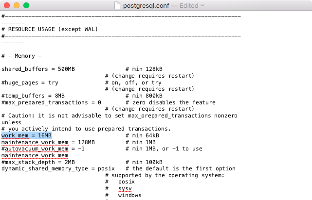

7. Maintenance¶
7.1. PostgreSQL Security¶
7.1.1. Authentication¶
PostgreSQL supports many different authentication methods, to allow easy integration into existing enterprise architectures. For production purposes, the following methods are commonly used:
- Password is the basic system where the passwords are stored by the database, with MD5 encryption.
- Kerberos is a standard enterprise authentication method, which is used by both the GSSAPI and SSPI schemes in PostgreSQL. Using SSPI, PostgreSQL can authenticate against Windows servers.
- LDAP is another common enterprise authentication method. The OpenLDAP server bundled with most Linux distributions provides an open source implementation of LDAP.
- Certificate authentication is an option if you expect all client connections to be via SSL and are able to manage the distribution of keys.
- PAM authentication is an option if you are on Linux or Solaris and use the PAM scheme for transparent authentication provision.
Authentication methods are controlled by the pg_hba.conf file. The “HBA” in the file name stands for “host based access”, because in addition to allowing you to specify the authentication method to use for each database, it allows you to limit host access using network addresses.
Here is an example pg_hba.conf file:
# TYPE DATABASE USER CIDR-ADDRESS METHOD
# "local" is for Unix domain socket connections only
local all all trust
# IPv4 local connections:
host all all 127.0.0.1/32 trust
# IPv6 local connections:
host all all ::1/128 trust
# remote connections for nyc database only
host nyc all 192.168.1.0/2 ldap
The file consists of five columns
- TYPE determines the kind of access, either “local” for connections from the same server or “host” for remote connections.
- DATABASE specifies what database the configuration line refers to or “all” for all databases
- USER specifies what users the line refers to or “all” for all users
- CIDR-ADDRESS specifies the network limitations for remote connections, using network/netmask syntax
- METHOD specifies the authentication protocol to use. “trust” skips authentication entirely and simply accepts any valid username without challenge. Other options are: “reject” which rejects the connection, “md5” which requires an md5 encrypted password, “password” which requires an unencrypted password, “gss” which uses GSSAPI to authenticate the user, “sspi” which uses SSPI to authenticate the user (only for Windows), “ident”, “peer” which obtains the client’s operating system user name from the operating system and check if it matches the requested database user name (for local connections), “ldap”, “radius”, “cert”, “pam”, and “bsd”. See the pg_hba.conf documentation for more info.
It’s common for local connections to be trusted, since access to the server itself is usually privileged. Remote connections are disabled by default when PostgreSQL is installed: if you want to connect from remote machines, you’ll have to add an entry.
The line for nyc in the example above is an example of a remote access entry. The nyc example allows LDAP authenticated access only to machines on the local network (in this case the 192.168.1. network) and only to the nyc database. Depending on the security of your network, you will use more or less strict versions of these rules in your production set-up.
7.1.2. Authorization¶
PostgreSQL has a rich and flexible permissions system, with the ability to parcel out particular privileges to particular roles, and provide users with the powers of one or more of those roles.
In addition, the PostgreSQL server can use multiple different systems to authenticate users. This means that the database can use the same authentication infrastructure as other architecture components, simplifying password management.
7.1.3. Users and Roles¶
In this chapter we will create two useful production users:
- A read-only user for use in a publishing application.
- A read/write user for use by a developer in building a software or analyzing data.
Rather than creating users and granting them the necessary powers, we will create two roles with the right powers and then create two users and add them to the appropriate roles. That way we can easily reuse the roles when we create further users.
7.1.3.1. Creating Roles¶
A role is a user and a user is a role. The only difference is that a “user” can be said to be a role with the “login” privilege.
So functionally, the two SQL statements below are the same, they both create a “role with the login privilege”, which is to say, a “user”.
CREATE ROLE mrbean LOGIN;
CREATE USER mrbean;
7.1.3.2. Read-only Users¶
Our read-only user will be for a web application to use to query the nyc_streets table.
The application will have specific access to the nyc_streets table, but will also inherit the necessary system access for PostGIS operations from the postgis_reader role.
-- A user account for the web app
CREATE USER app1;
-- Web app needs access to specific data tables
GRANT SELECT ON nyc_streets TO app1;
-- A generic role for access to PostGIS functionality
CREATE ROLE postgis_reader INHERIT;
-- Give that role to the web app
GRANT postgis_reader TO app1;
Now, use the psql command line to login as as app1:
psql -d nyc -U app1
Try the following queries:
-- This works!
SELECT * FROM nyc_streets LIMIT 1;
-- This works too!
SELECT ST_AsText(ST_Transform(geom, 4326))
FROM nyc_streets LIMIT 1;
The INHERIT clause granted postgis_reader with the privilegedges that all the roles in the database have. Now we have a nice generic postgis_reader role we can apply to any user that need to read from PostGIS tables.
7.1.3.3. Read/write Users¶
There are two kinds of read/write scenarios we need to consider:
- Web applications and others that need to write to existing data tables.
- Developers or analysts that need to create new tables and geometry columns as part of their work.
For web applications that require write access to data tables, we just need to grant extra permissions to the tables themselves, and we can continue to use the postgis_reader role.
-- Add insert/update/delete abilities to our web application
GRANT INSERT,UPDATE,DELETE ON nyc_streets TO app1;
These kinds of permissions would be required for a read/write WFS service, for example.
For developers and analysts, a little more access is needed to the main PostGIS metadata tables. We will need a postgis_writer role that can edit the PostGIS metadata tables!
-- Make a postgis writer role
CREATE ROLE postgis_writer;
-- Start by giving it the postgis_reader powers
GRANT postgis_reader TO postgis_writer;
-- Add insert/update/delete powers for the PostGIS tables
GRANT INSERT,UPDATE,DELETE ON spatial_ref_sys TO postgis_writer;
-- Make app1 a PostGIS writer to see if it works!
GRANT postgis_writer TO app1;
Now try the table creation SQL above as the app1 user and see how it goes!
7.1.4. Encryption¶
PostgreSQL provides a lot of encryption facilities, many of them optional, some of them on by default.
- By default, all passwords are MD5 encrypted. The client/server handshake double encrypts the MD5 password to prevent re-use of the hash by anyone who intercepts the password. It is also possible to use SCRAM which is an Internet standard.
- SSL connections are optionally available between the client and server, to encrypt all data and login information. SSL certificate authentication is also available when SSL connections are used.
- Columns inside the database can be encrypted using the pgcrypto module, which includes hashing algorithms, direct ciphers (blowfish, aes) and both public key and symmetric PGP encryption.
7.1.4.1. SSL Connections¶
In order to use SSL connections, both your client and server must support SSL. Your version of PostgreSQL may have SSL support built, but not enabled. If so, we have to carry out a few steps to turn it on first.
First, turn shut down PostgreSQL, since activating SSL will require a restart.
Next, we acquire or generate an SSL certificate and key. The certificate will need to have no passphrase on it, or the database server won’t be able to start up. You can generate a self-signed key as follows:
# Create a new certificate, filling out the certification info as prompted openssl req -new -text -out server.req # Strip the passphrase from the certificate openssl rsa -in privkey.pem -out server.key # Convert the certificate into a self-signed cert openssl req -x509 -in server.req -text -key server.key -out server.crt # Set the permission of the key to private read/write chmod og-rwx server.key
Copy the
server.crtandserver.keyinto the PostgreSQL data directory.Enable SSL support in the
postgresql.conffile by turning the “ssl” parameter to “on”.
Now re-start PostgreSQL. The server is now ready for SSL operation.
With the server enabled for SSL, creating an encrypted connection is easy. In PgAdmin, create a new server connection (File > Add Server…), and set the SSL parameter to “require”.

Once you connect with the new connection, you can see in its properties that it is using an SSL connection.

Since the default SSL connection mode is “prefer”, you don’t even need to specify an SSL preference when connecting. A connection with the command line psql terminal will pick up the SSL option and use it by default:
psql (8.4.9)
SSL connection (cipher: DHE-RSA-AES256-SHA, bits: 256)
Type "help" for help.
postgres=#
Note how the terminal reports the SSL status of the connection.
7.1.4.2. Data Encryption¶
The pgcrypto module has a huge range of encryption options, so we will only demonstrate the simplest use case: encrypting a column of data using a symmetric cipher.
- First, enable pgcrypto by creating the EXTENSION, either in PgAdmin or psql.
CREATE EXTENSION IF NOT EXISTS pgcrypto;
Then, test the encryption function. The first parameter is the data to encrypt, the second is the user selected cipher key, and the third is the algorithm used to encrypt which in this case bf stands for blowfish, another option for this is aes which stands for AES (Rijndael-128).
-- encrypt a string using blowfish (bf) SELECT encrypt('this is a test phrase', 'mykey', 'bf');
And make sure it’s reversible too!
-- round-trip a string using blowfish (bf) SELECT decrypt(encrypt('this is a test phrase', 'mykey', 'bf'), 'mykey', 'bf');
7.2. PostgreSQL Schemas¶
Production databases inevitably have a large number of tables and views, and managing them all in one schema can become unwieldy quickly. Fortunately, PostgreSQL includes the concept of a “_Schema”.
Schemas are like folders, and can hold tables, views, functions, sequences and other relations. Every database starts out with one schema, the public schema.

Inside that schema, the default install of PostGIS creates the geometry_columns, geography_columns and spatial_ref_sys metadata relations, as well as all the types and functions used by PostGIS. So users of PostGIS always need access to the public schema.
In the public schema you can also see all the tables we have created so far in the course.
7.2.1. Why use Schemas?¶
There are two very good reasons for using schemas:
- Data that is managed in a schema is easier to apply bulk actions to.
- It’s easier to back-up data that’s in a separate schema: so volatile data can have a different back-up schedule from non-volatile data.
- It’s easier to restore data that’s in a separate schema: so application-oriented schemas can be separately restored and backed up for time travel and recovery.
- It’s easier to manage application differences when the application data is in a schema: so a new version of software can work off a table structure in a new schema, and cut-over involves a simple change to the schema name.
- Users can be restricted in their work to single schemas to allow isolation of analytical and test tables from production tables.
So for production purposes, keeping your application data separate in schemas improves management; and for user purposes, keeping your users in separate schemas keeps them from treading on each other.
7.2.2. Creating a Data Schema¶
Let’s create a new schema and move a table into it. First, create a new schema in the database:
CREATE SCHEMA census;
Next, we will move the nyc_census_blocks table to the census schema:
ALTER TABLE nyc_census_blocks SET SCHEMA census;
If you’re using the psql command-line program, you’ll notice that nyc_census_blocks has disappeared from your table listing now! If you’re using PgAdmin, you might have to refresh your view to see the new schema and the table inside it.
You can access tables inside schemas in two ways:
- by referencing them using
schema.tablenotation - by adding the schema to your
search_path
Explicit referencing is easy, but it gets tiring to type after a while:
SELECT * FROM census.nyc_census_blocks LIMIT 1;
Manipulating the search_path is a nice way to provide access to tables in multiple schemas without lots of extra typing.
You can set the search_path at run time using the SET command:
SET search_path = census, public;
This ensures that all references to relations and functions are searched in both the census and the public schemas. Remember that all the PostGIS functions and types are in public so we don’t want to drop that from the search path.
Setting the search path every time you connect can get tiring too, but fortunately it’s possible to permanently set the search path for a user:
ALTER USER postgres SET search_path = census, public;
Now the postgres user will always have the census schema in their search path.
7.2.3. Creating a User Schema¶
Users like to create tables, and PostGIS users do so particularly: analysis operations with SQL demand temporary tables for visualization or interim results, so spatial SQL tends to require that users have CREATE privileges more than ordinary database workloads.
By default, every role in Oracle is given a personal schema. This is a nice practice to use for PostgreSQL users too, and is easy to replicate using PostgreSQL roles, schemas, and search paths.
Create a new user with table creation privileges (see PostgreSQL Security for information about the postgis_writer role), then create a schema with that user as the authorization:
CREATE USER myuser WITH ROLE postgis_writer;
CREATE SCHEMA myuser AUTHORIZATION myuser;
If you log in as that user, you’ll find the default search_path for PostgreSQL is actually this:
show search_path;
search_path
----------------
"$user",public
The first schema on the search path us the user’s named schema! So now the following conditions exist:
- The user exists, with the ability to create spatial tables.
- The user’s named schema exists, and the user owns it.
- The user’s search path has the user schema first, so new tables are automatically created there, and queries automatically search there first.
That’s all there is to it, the user’s default work area is now nicely separated from any tables in other schemas.
7.3. PostgreSQL Backup and Restore¶
There are lots of ways to backup a PostgreSQL database, and the one you choose will depend a great deal on how you are using the database.
- For relatively static databases, the basic pg_dump/pg_restore tools can be used to take periodic snapshots of the data.
- For frequently changing data, using an “online backup” scheme allows continuous archiving of updates to a secure location.
Online backup is the basis for replication and stand-by systems for high availability, particularly for versions of PostgreSQL >= 9.0.
7.3.1. Laying Out your Data¶
As discussed in PostgreSQL Schemas, ensuring that production data is always stored in separate schemas is a very important best practice in managing data. There are two reasons:
- Backing up and restoring data in schemas is much simpler than managing lists of tables to be backed up individually.
- Keeping data tables out of the “public” schema allows far easier upgrades, as discussed in Software Upgrades.
7.3.2. Basic Backup and Restore¶
Backing up a full database is easy using the pg_dump utility. The utility is a command-line tool, which makes it easy to automate with scripting, and it can also be invoke via a GUI in the PgAdmin utility.
To backup our nyc database, we can use the GUI, just right-click the database you want to backup:

Enter the name of the backup file you want to create.

Note that there are three backup format options: compress, tar and plain.
- Plain is just a textual SQL file. This is the simplest format and in many ways the most flexible, since it can be editing or altered easily and then loaded back into a database, allowing offline changes to things like ownership or other global information.
- Tar using a UNIX archive format to hold components of the dump in separate files. Using the tar format allows the pg_restore utility to selectively restore parts of the dump.
- Compress is like the Tar format, but compresses the internal components individually, allowing them to be selectively restored without decompressing the entire archive.
We’ll check the Compress option and go, saving out a backup file.
The same operation can be done with the command line like this:
pg_dump --file=nyc.backup --format=c --port=54321 --username=postgres nyc
Because the backup file is in Compress format, we can view the contents using the pg_restore command to list the manifest. In the PgAdmin GUI, “View” is an option in the panel.

When you look at the manifest, one of the things you might notice is that there are a lot of “FUNCTION” signatures in there.

That’s because the pg_dump utility dumps every non-system object in the database, and that includes the PostGIS function definitions.
Note
PostgreSQL 9.1+ includes an “EXTENSION” feature that allows add-on packages like PostGIS to be installed as registered system components and therefore excluded from pg_dump output. PostGIS 2.0 and higher support installation using this extension system.
We can see the same manifest from the command-line using pg_restore directly:
pg_restore --list nyc.backup
The problem with a dump file full of PostGIS function signatures is that we really wanted a dump of our data, not our system functions.
Since every object is in the dump file, we can restore to a blank database and get full functionality. In doing so, we are expecting that system we are restoring to has exactly the same version of PostGIS as the one we dumped from (since the function signature definitions reference a particular version of the PostGIS shared library).
From the command-line the restore looks like this:
createdb --port 54321 nyc2
pg_restore --dbname=nyc2 --port 54321 --username=postgres nyc.backup
Dumping just data, without function signatures, is where having data in schemas is handy, because there is a command-line flag to only dump a particular schema:
pg_dump --port=54321 -format=c --schema=census --file=census.backup
Now when we list the contents of the dump, we see just the data tables we wanted:
pg_restore --list census.backup
;
; Archive created at Thu Aug 9 11:02:49 2012
; dbname: nyc
; TOC Entries: 11
; Compression: -1
; Dump Version: 1.11-0
; Format: CUSTOM
; Integer: 4 bytes
; Offset: 8 bytes
; Dumped from database version: 8.4.9
; Dumped by pg_dump version: 8.4.9
;
;
; Selected TOC Entries:
;
6; 2615 20091 SCHEMA - census postgres
146; 1259 19845 TABLE census nyc_census_blocks postgres
145; 1259 19843 SEQUENCE census nyc_census_blocks_gid_seq postgres
2691; 0 0 SEQUENCE OWNED BY census nyc_census_blocks_gid_seq postgres
2692; 0 0 SEQUENCE SET census nyc_census_blocks_gid_seq postgres
2681; 2604 19848 DEFAULT census gid postgres
2688; 0 19845 TABLE DATA census nyc_census_blocks postgres
2686; 2606 19853 CONSTRAINT census nyc_census_blocks_pkey postgres
2687; 1259 20078 INDEX census nyc_census_blocks_geom_gist postgres
Having just the data tables is handy, because it means we can store to a database with any version of PostGIS installed, as we talk about in Software Upgrades.
7.3.2.1. Backing Up Users¶
The pg_dump utility operates a database at a time (or a schema or table at a time, if you restrict it). However, information about users is is stored across an entire cluster, it’s not stored in any one database!
To backup your user information, use the pg_dumpall utility, with the “–globals-only” flag.
pg_dumpall --globals-only --port 54321
You can also use pg_dumpall in its default mode to backup an entire cluster, but be aware that, as with pg_dump, you will end up backing up the PostGIS function signatures, so the dump will have to be restored against an identical software installation, it can’t be used as part of an upgrade process.
7.3.3. Online Backup and Restore¶
Online backup and restore allows an administrator to keep an extremely up-to-date set of backup files without the overhead of repeatedly dumping the entire database. If the database is under frequent insert and update load, then online backup might be preferable to basic backup.
Note
The best way to learn about online backup is to read the relevant sections of the PostgreSQL manual on continuous archiving and point-in-time recovery. This section of the PostGIS course will just provide a brief snapshot of online backup set-up.
7.3.3.1. How it Works¶
Rather than continually write to the main data tables, PostgreSQL stores changes initially in “write-ahead logs” (WAL). Taken together, these logs are a complete record of all changes made to a database. Online backup consists of taking a copy of the database main data table, then taking a copy of each WAL that is generated from then on.

When it is time to recover to a new database, the system starts on the main data copy, then replays all the WAL files into the database. The end result is a restored database in the same state as the original at the time of the last WAL received.
Because WAL are being written anyways, and transferring copies to an archive server is computationally cheap, online backup is an effective means of keeping a very up-to-date backup of a system without resorting to intensive regular full dumps.
7.3.3.2. Archiving the WAL Files¶
The first thing to do in setting up online backup is to create an archiving method. PostgreSQL archiving methods are the ultimate in flexibility: the PostgreSQL backend simply calls a script specified in the archive_command configuration parameter.
That means archiving can be as simple as copying the file to a network-mounted drive, and as complex as encrypting and emailing the files to the remote archive. Any process you can script you can use to archive the files.
To turn on archiving we will edit postgresql.conf, first turning on WAL archiving:
wal_level = archive
archive_mode = on
And then setting the archive_command to copy our archive files to a safe location (changing the destination paths as appropriate):
# Unix
archive_command = 'test ! -f /archivedir/%f && cp %p /archivedir/%f'
# Windows
archive_command = 'copy "%p" "C:\\archivedir\\%f"'
It is important that the archive command not over-write existing files, so the unix command includes an initial test to ensure that the files aren’t already there. It is also important that the command returns a non-zero status if the copy process fails.
Once the changes are made you can re-start PostgreSQL to make them effective.
7.3.3.3. Taking the Base Backup¶
Once the archiving process is in place, you need to take a base back-up.
Put the database into backup mode (this doesn’t do anything to alter operation of queries or data updates, it just forces a checkpoint and writes a label file indicating when the backup was taken).
SELECT pg_start_backup('/archivedir/basebackup.tgz');
For the label, using the path to the backup file is a good practice, as it helps you track down where the backup was stored.
Copy the database to an archival location:
# Unix
tar cvfz /archivedir/basebackup.tgz ${PGDATA}
Then tell the database the backup process is complete.
SELECT pg_stop_backup();
All these steps can of course be scripted for regular base backups.
7.3.3.4. Restoring from the Archive¶
These steps are taking from the PostgreSQL manual on continuous archiving and point-in-time recovery.
- Stop the server, if it’s running.
- If you have the space to do so, copy the whole cluster data directory and any tablespaces to a temporary location in case you need them later. Note that this precaution will require that you have enough free space on your system to hold two copies of your existing database. If you do not have enough space, you should at least save the contents of the cluster’s pg_xlog subdirectory, as it might contain logs which were not archived before the system went down.
- Remove all existing files and subdirectories under the cluster data directory and under the root directories of any tablespaces you are using.
- Restore the database files from your file system backup. Be sure that they are restored with the right ownership (the database system user, not root!) and with the right permissions. If you are using tablespaces, you should verify that the symbolic links in pg_tblspc/ were correctly restored.
- Remove any files present in pg_xlog/; these came from the file system backup and are therefore probably obsolete rather than current. If you didn’t archive pg_xlog/ at all, then recreate it with proper permissions, being careful to ensure that you re-establish it as a symbolic link if you had it set up that way before.
- If you have unarchived WAL segment files that you saved in step 2, copy them into pg_xlog/. (It is best to copy them, not move them, so you still have the unmodified files if a problem occurs and you have to start over.)
- Create a recovery command file recovery.conf in the cluster data directory (see Chapter 26). You might also want to temporarily modify pg_hba.conf to prevent ordinary users from connecting until you are sure the recovery was successful.
- Start the server. The server will go into recovery mode and proceed to read through the archived WAL files it needs. Should the recovery be terminated because of an external error, the server can simply be restarted and it will continue recovery. Upon completion of the recovery process, the server will rename recovery.conf to recovery.done (to prevent accidentally re-entering recovery mode later) and then commence normal database operations.
- Inspect the contents of the database to ensure you have recovered to the desired state. If not, return to step 1. If all is well, allow your users to connect by restoring pg_hba.conf to normal.
7.4. Tuning PostgreSQL for Spatial¶
PostgreSQL is a very versatile database system, capable of running efficiently in very low-resource environments and environments shared with a variety of other applications. In order to ensure it will run properly for many different environments, the default configuration is very conservative and not terribly appropriate for a high-performance production database. Add the fact that geospatial databases have different usage patterns, and the data tend to consist of fewer, much larger records than non-geospatial databases, and you can see that the default configuration will not be totally appropriate for our purposes.
All of these configuration parameters can be edited in the postgresql.conf configuration file. If using Mac with the postgres app installation, this is /Users/may/Library/Application Support/Postgres/var-11/postgresql.conf This is a regular text file and can be edited using TextEdit or any other text editor. The changes will not take effect until the server is restarted.

This section describes some of the configuration parameters that should be adjusted for a production-ready geospatial database. For each section, find the appropriate item in the file, remove the comment symbol # and change the Value to the recommended value as described, then after editing all values Save the file.
Note
These values are recommendations only; each environment will differ and testing is required to determine the optimal configuration. But this section should get you off to a good start.
7.4.1. shared_buffers¶
Sets the amount of memory the database server uses for shared memory buffers. These are shared amongst the back-end processes, as the name suggests. The default values are typically woefully inadequate for production databases.
Default value: typically 128MB
Recommended value: 75% of database memory (500MB)

7.4.2. work_mem¶
Defines the amount of memory that internal sorting operations and hash tables can consume before the database switches to on-disk files. This value defines the available memory for each operation; complex queries may have several sort or hash operations running in parallel, and each connected session may be executing a query.
As such you must consider how many connections and the complexity of expected queries before increasing this value. The benefit to increasing is that the processing of more of these operations, including ORDER BY, and DISTINCT clauses, merge and hash joins, hash-based aggregation and hash-based processing of subqueries, can be accomplished without incurring disk writes.
Default value: 4MB
Recommended value: 16MB
7.4.3. maintenance_work_mem¶
Defines the amount of memory used for maintenance operations, including vacuuming, index and foreign key creation. As these operations are not terribly common, the default value may be acceptable. This parameter can alternately be increased for a single session before the execution of a number of CREATE INDEX or VACUUM calls as shown below.
SET maintenance_work_mem TO '128MB'; VACUUM ANALYZE; SET maintenance_work_mem TO '16MB';Default value: 64MB
Recommended value: 128MB

7.4.4. random_page_cost¶
This is a unit-less value that represents the cost of a random page access from disk. This value is relative to a number of other cost parameters including sequential page access, and CPU operation costs. While there is no magic bullet for this value, the default is generally conservative. This value can be set on a per-session basis using the SET random_page_cost TO 2.0 command.
Default value: 4.0
Recommended value: 2.0

7.4.5. seq_page_cost¶
This is the parameter that controls the cost of a sequential page access. This value does not generally require adjustment but the difference between this value and random_page_cost greatly affects the choices made by the query planner. This value can also be set on a per-session basis.
Default value: 1.0
Recommended value: 1.0

7.4.6. Reload configuration¶
After these changes are made, save changes and reload the configuration. The easiest way to do this is to restart the PostgreSQL service.
- In pgAdmin, right-click the server PostGIS (localhost:5432) and select Reload Configuration.
7.5. Software Upgrades¶
Because PostGIS resides within PostgreSQL every PostGIS installation actually consists of two versions of software: the PostgreSQL version and the PostGIS version. As a general principle, each version of PostGIS can be theoretically run within a number of versions of PostgreSQL, and vice versa.
So, upgrades need to be considered in terms of upgrading each component.
7.5.1. Upgrading PostgreSQL¶
There are two kinds of PostgreSQL upgrade scenarios:
- A “minor upgrade” when the software version increases at the “patch” level. For example, from 8.4.3 to 8.4.4, or from 9.0.1 to 9.0.3. Increases of more than one patch version are just fine. Minor upgrades fix bugs but do not add any new features or change behaviour.
- A “major upgrade” when the “major” or “minor” versions increase. For example, from 8.4.5 to 9.0.0, or from 9.0.5 to 9.1.1. Major upgrades add new features and change behavior.
7.5.1.1. Minor PostgreSQL Upgrades¶
For “minor upgrades”, no special process is necessary. Simply install the new software, and re-start the server.
7.5.1.2. Major PostgreSQL Upgrades¶
For “major upgrades” there are two ways to carry out the upgrade.
7.5.2. Dump/Restore¶
Dumping and restoring involves converting all the data to a platform neutral format (text representations) on dump, and back to native representations on restore, so it can be time consuming and CPU intensive. However, if you are migrating to a new architecture or operating system, it’s a required process. It’s also a time-tested and well-understood upgrade path, so if your database is not too big, there’s no reason not to stick with it.
- Dump your data
pg_dumpallfrom the old database. - Install the new version of PostgreSQL and the same version of PostGIS you are using in your old database. You need to match the PostGIS version so that the dump file function definitions reference an expected version of the PostGIS library.
- Initialize the new data area using the
initdbprogram from the new software. - Start the new server on the new data area.
- Restore the dump file using
pg_restore.
7.5.3. pg_upgrade¶
The pg_upgrade utility allows PostgreSQL data directories to be upgraded without the requirement for a dump/restore step. The utility cannot handle changes to the data files themselves, but handles the more common and frequent changes to system tables that occur in PostgreSQL major upgrades.
Note
The full instructions for running the upgrade process are in the pg_upgrade web page at the PostgreSQL site.
The pg_upgrade program expects to have access to both versions of PostgreSQL it is working with, the old and the new version, so you will have to install them both.
Install the new version of PostgreSQL you will be using.
Install the same version of PostGIS you are using in the old PostgreSQL into the new PostgreSQL.
Initialize the new PostgreSQL data area with the new copy of
initdb.Ensure both the old and new PostgreSQL servers are turned off.
Run pg_upgrade, making sure to use the binary from the new software installation.
pg_upgrade --old-datadir "C:/Program Files/PostgreSQL/8.4/data" --new-datadir "C:/Program Files/PostgreSQL/9.0/data" --old-bindir "C:/Program Files/PostgreSQL/8.4/bin" --new-bindir "C:/Program Files/PostgreSQL/9.0/bin"
If pg_upgrade generated any
.sqlfiles, run them now.Start the new server.
7.5.4. Upgrading PostGIS¶
There are two upgrade scenarios for PostGIS too, but they are slightly different from the PostgreSQL scheme:
There are two kinds of PostGIS upgrade scenarios:
- A “minor or patch upgrade” is when the software version increases at the “patch” or “minor” level. For example, from 2.0.1 to 2.0.2, or from 2.0.2 to 2.1.0. Patch upgrades fix bugs only and do not add new features. Minor upgrades fix add new features or change behaviour.
- A “major upgrade” is when the “major” version increases. This is extremely rare. For example, from 0.9.4 to 1.0.0, or from 1.5.4 to 2.0.0. Major upgrades change the on-disk storage format for geometries and require a full database dump and restore.
7.5.4.1. Minor/Patch PostGIS Upgrades¶
PostGIS deals with minor and upgrades through the EXTENSION mechanism. If you spatially-enabled your database using CREATE EXTENSION postgis, you can update your database using the same functionality.
First, install the new software so it is available to the database.
Then, run the SQL to upgrade your PostGIS extension.
-- To upgrade to 2.1.2
ALTER EXTENSION postgis UPDATE TO '2.1.2';
7.5.5. Major PostGIS Upgrades¶
Major upgrades involve changes to the actual data format for the on-disk storage of geometry and geography data. As such, the data tables need to be re-written. The only way to achieve this is to dump (creating a neutral text-based output) and restore (writing the new table format to disk).
To upgrade, you will have to dump your data first, as discussed in PostgreSQL Backup and Restore.
7.5.5.1. With Data in Schemas¶
Dump your data by schema.
pg_dump --port=54321 --type=compressed --file=yourschema.backup --schema=yourschema yourdatabase
Install the new version of the PostGIS software.
Create a new blank database, and enable PostGIS in it.
Load your data using pg_restore.
pg_restore --port=54321 --type=compressed --dbname=yournewdatabase yourschema.backup
7.5.5.2. Without Data in Schemas¶
In this case you have to dump the whole database, which means the dump file will contain PostGIS function and type signatures, and old ones at that. Before loading that file back into the new database, we strip out all the PostGIS-specific bits using a magic script from the PostGIS distribution.
Dump your whole database, using the “compressed” backup format.
pg_dump --port=54321 --type=compressed --file=yourdatabase.backup yourdatabase
Install the new version of the PostGIS software.
Filter your database backup using the ./utils/postgis_restore.pl script from the new version of PostGIS.
postgis_restore.pl yourdatabase.backup > yourdatabase.sql
Create a new blank database, and enable PostGIS in it.
-- New in PostGIS 2+ / PgSQL 9.1+ -- Formal extensions replace hand loading sql files! CREATE EXTENSION postgis;
Load the filtered data back into the new databaes
psql --port=54321 --file=yourdatabase.sql --dbname=yournewdatabase
You should now have an upgraded database ready to use.
7.5.5.3. Default SRID¶
For PostGIS 0.X and 1.X, the SRID assigned to geometries created without specifying an SRID was -1.
For PostGIS 2.X, the SRID assigned to geometries created without specifying an SRID is 0.
This is only important to client applications calling the ST_SRID() function and testing the result.
7.5.5.4. SRID Range Limits¶
In order to fit the SRID number into a limited address range in the PostgreSQL system tables, the range of values PostGIS 2.X supports for SRID numbers is actually smaller than the range supported in 1.X.
Legal user-defined SRIDs in PostGIS 2.X are from 1 to 998999. The top 10000 SRIDs are retained by PostGIS for internal use.